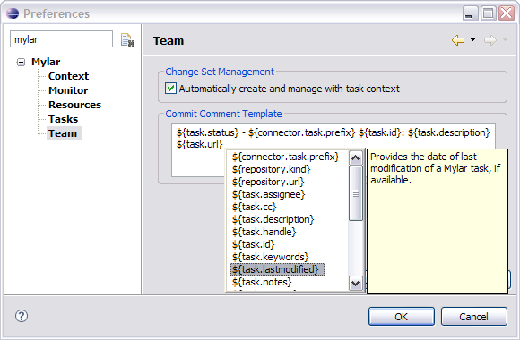

| Team Support | ||
|---|---|---|
|
|
|
|
| Task-Focused UI | Task Repository Connectors | |
There are two modes for Eclipse's Change Sets support: the models mode (Eclipse 3.2 and later) and the standard mode. These modes are unrelated to Mylyn and apply to both Mylyn's automated Change Sets and the ones you can created manually in Eclipse. Note that not all tools may support both modes. The instructions below are for the CVS support included with Mylyn. Refer to the Mylyn integration documentation for your source control plug-in for additional instructions for Mylyn change set integration, if available.
The models mode is toggled via Synchronize View -> Preferences -> CVS -> Allow Models to participate in synchronizations. The Eclipse UI for Change Sets is not obvious so consider the following guidelines if you are having problems with it.
If you are using the standard mode, Change Sets toolbar button will only appear if the Synchronize view is in Incoming or Outgoing mode, not in the combined Incoming/Outgoing mode. This button must be pressed in order for change sets to appear. For working with CVS two modes are indistinguishable beyond this limitation. Subclipse only supports the standard mode. If you switch modes you must re-create your synchronization via the Synchronize... button available from the first toolbar button on the Synchronize view.

If you are using the models mode, which is recommended if available for your team provider, you will notice that the Mylyn Active Change Sets work show up with a decoration in the lower-right corner, and that you can view both incoming and outgoing change sets at the same time.

Operations such as
committing,
updating, and
patch creation can all be performed on Mylyn's automatically managed
Change Sets. Right+click the change set node to get the corresponding
Team menu. Changed resources that are not a part of any task context will appear under the root of the
Synchronize view. If needed missing resources can be added to the task context
Change Set via the
Synchronize View by right+clicking the resource and selecting
Add to and then selecting the corresponding task.
Mylyn will automatically generate commit messages for you when you use its Change Set support. To modify the template go to Window -> Preferences -> Mylyn -> Team -> Commit Comment Templates.

When applying patches, the preferred scenario is to have a task context attached to the task along with the patch. Since this is not always feasible, Mylyn provides an action in the popup menu of the Synchronize view that supports adding changed elements to the task context.

|
|

|
|
| Task-Focused UI | Task Repository Connectors |